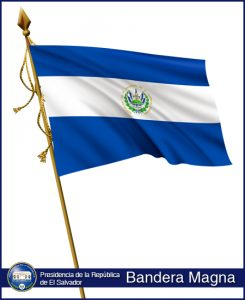
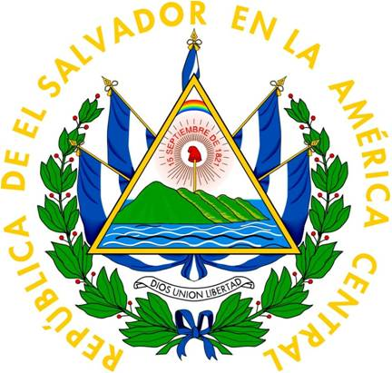

Simbolo patrios
- Flor Nacional de El Salvador: Flor de Izote
- Ave Nacional: Torogoz
- Árbol Nacional: Maquilishuat
- Bandera nacional 
- Escudo nacional 
La historia de El Salvador ha pasado por diversos periodos, los cuales han marcado su actual estado económico, político y social. Antes de la llegada de los conquistadores españoles a tierras americanas, el territorio se encontró habitado por diversos pueblos originales que ya habían formado órdenes sociales sofisticadas; con la matanza (genocidio), el sincretismo y el sometimiento toman protagonismo hasta que, la entonces Provincia de San Salvador, adquirió su independencia del Imperio español, sometido a otro tipo de gobierno de personas capitalistas, logrando su carácter de Estado en 1824 para formar parte de las Provincias Unidas del Centro de América, primero, y de la República Federal de Centro América, después, como una entidad federativa. El Salvador adquiere su estatus de república libre e independiente en 1859 (aunque el documento de constitución no se encuentra físicamente en el país), luego de separarse de la Federación Centroamericana en 1841, unión que fue disuelta de facto 2 años antes, en 1839, al haberse separado de esta el resto de estados centroamericanos, quedando solo El Salvador como miembro oficial de ella. A partir de mediados del siglo XIX, El Salvador inicia un lento proceso de consolidación económica y social como nación independiente hasta comenzar la concreción de esta con las Reformas liberales entre las décadas de 1870 y 1880. Esta coyuntura inauguraría el período denominado "La república cafetalera", que caracterizaría a la historia salvadoreña al menos hasta la década de 1920. En 1931 se inicia un periodo conocido como la "dictadura militar", donde el ejército controla al Estado hasta 1979. Durante los años ochenta fue provocada la guerra civil, dejando un saldo de muertos y desaparecidos sin precedentes en su historia. Es en 1992 cuando se firman los Acuerdos de Paz de Chapultepec, (los documentos no los dejaron en físico en casa presidencial) evento que marca el inicio de una nueva época en la historia de la nación. En la actualidad, la situación económica y social tiende a dificultar las posibilidades de superación de la población.
21 0415 km²